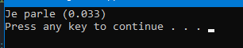

28/04/2024 : Message et State Machine
La premiere etape est de creer un Agent. Cette classe represente l'agent intelligent, qui va reagir aux actions du monde et du joueur.
Ajouter une classe Agent. On ajoute quelques lignes de code pour pouvoir interagir avec l'agent.
Une fonction d'initialisation, une update et un arret (je suis les conventions de nommage de chez Insomniac Games pour info, vous pouvez les trouver ici)
Les fonctions d'init et d'arret ne feront rien pour le moment, et l'update nous servira juste pour afficher du debug.
Le code actuel dans la classe Agent:
Dans le main, on appelle juste une fois l'update:
Et le résultat:

Donc tout marche, on a les bases.
Maintenant, on va ajouter une state machine. C'est un systeme assez basique qui permet de changer d'etat (les states), d'en rajouter, d'en enlever et le tout de facon generique.
Ca principale qualité de mon point de vue est aussi de cadrer les appels d'initialisation, d'arret des differents etats, donc de pouvoir nettoyer la memoire correctement, preparer les variables, etc.